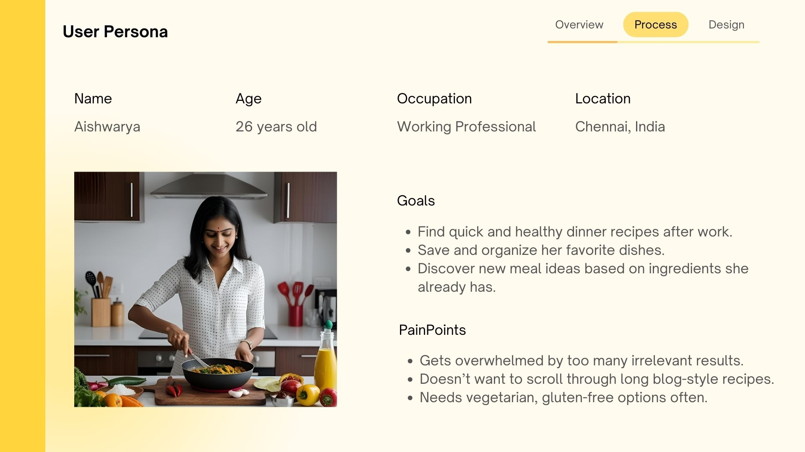
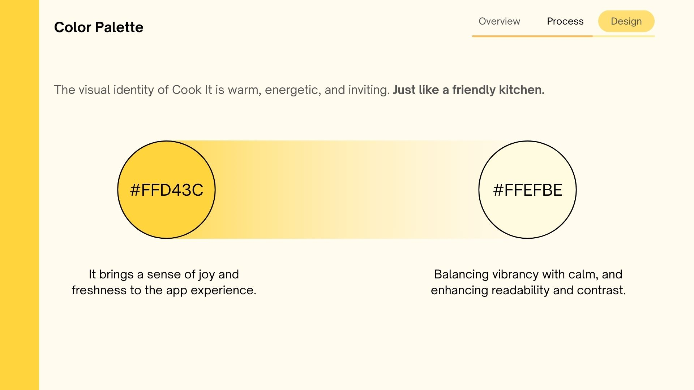

Cook It — Recipe App
UI/UX Design · 2024
An interactive mobile recipe app designed to simplify cooking through step-by-step guidance and smart ingredient tracking.


UI/UX Design · 2024
An interactive mobile recipe app designed to simplify cooking through step-by-step guidance and smart ingredient tracking.